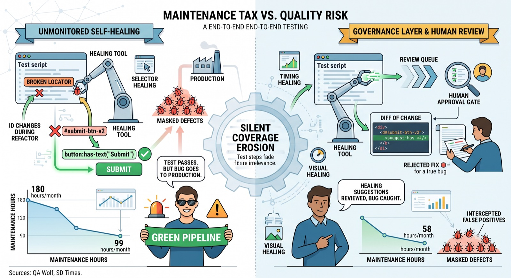

Self-Healing Tests: What They Actually Fix, and What They Quietly Break
Self-healing test tools patch broken selectors automatically, but they can also hide the very defects your suite exists to catch. Here's how to use them safely.
A button's id changes during a routine refactor, a dozen end-to-end tests go red, and someone on the team spends an afternoon updating selectors that have nothing to do with the actual feature being tested. This is the maintenance tax that "self-healing" test tools promise to eliminate: when a locator breaks, the tool finds the element some other way and keeps the test running. It's a real time-saver, but it also changes what a passing test means, and that shift is easy to miss until it costs you a production incident.
What self-healing tools actually do
"Self-healing" is not one technique. Most tools on the market combine several narrower mechanisms, each aimed at a different class of failure:
- Selector healing – when the DOM changes, the tool diffs the page structure and picks a new locator (a different attribute, a nearby anchor element, updated text) instead of failing outright.
- Timing healing – instead of a hardcoded
wait(2000), the tool watches network calls and DOM mutations and waits for the page to actually settle. - Data healing – expired sessions, stale tokens, or outdated fixtures get refreshed automatically before the test fails on something unrelated to the feature under test.
- Visual and interaction healing – comparing rendered output while ignoring irrelevant pixel noise, or inserting a missing step (like expanding a collapsed menu) that the original script didn't anticipate.
Selector changes get the most attention because they're the most visible failure mode, but in practice they account for a minority of total test breakage — industry breakdowns from vendors in this space put selector-related failures at under a third of all flaky or broken runs, with timing issues making up a comparable or larger share. That matters, because a tool that only heals selectors is solving less of your maintenance problem than the marketing implies.
Here's a simplified example of what a "healing" locator strategy looks like in practice, using a fallback chain rather than a single brittle selector:
// Instead of a single point of failure:
await page.locator('#submit-btn-v2').click();
// A resilient (and healable) approach tries multiple signals:
const submitButton = page.locator(
'#submit-btn-v2, [data-testid="submit"], button:has-text("Submit")'
);
await submitButton.first().click();A self-healing tool automates the process of discovering that second or third option after the first one breaks, and then — depending on the tool — either patches the test script or just logs that healing occurred and keeps running.
The part vendors don't lead with
The risk isn't that self-healing tools make mistakes occasionally. It's that they can't tell the difference between "the button moved because of a harmless refactor" and "the button moved because someone shipped a bug." Both look identical to a locator-matching algorithm: an expected element isn't where the test expects it. If the tool's job is to keep the test green, it will happily paper over both cases the same way — one team researching this problem called it "silent coverage erosion."
A governance-focused case study covering roughly a year of production use at a financial services company illustrates the trade-off concretely. Running a static test suite with no self-healing cost around 180 maintenance hours a month and still let 12 defects slip through undetected. Turning on self-healing without any oversight cut maintenance to about 99 hours a month, but the number of masked defects roughly quadrupled compared to the static baseline. Adding a governance layer — human review gates for changes touching critical flows, and a required log of every accepted or rejected auto-fix — brought maintenance down to about 58 hours a month while intercepting the large majority of false positives before they reached production.

The lesson isn't "don't use self-healing," it's that unmonitored self-healing trades visible maintenance work for invisible quality risk, and the invisible kind is much more expensive when it surfaces.
Pitfalls and limits
Self-healing test tools are not a substitute for good locator hygiene, and they have real limits worth knowing before you adopt one:
They only address symptoms your suite already produces. If your tests weren't covering a flow before, healing won't add coverage — it just keeps the existing, possibly thin, coverage running longer without maintenance.
They struggle most exactly where it matters most: in regulated or high-stakes flows (payments, account changes, compliance-sensitive steps), an automatically "fixed" test that silently stops verifying the right thing is worse than a test that fails loudly, because nobody investigates a green pipeline.
They can create a false sense of security around flakiness. A test that keeps passing because the tool keeps finding something to click isn't necessarily testing the right thing anymore — it may be clicking the wrong element that happens to also be clickable.
They need auditing, not just adoption. Most teams that get burned by this skip the step of periodically reviewing what got auto-healed and why, treating "still green" as sufficient evidence that everything is fine.
What to do next
Turn on healing selectively, not suite-wide, starting with low-risk, high-churn UI areas where selector drift is frequent and the cost of a missed regression is low.
Require your tool (or a wrapper around it) to log every auto-fix with a diff of what changed, and review that log weekly rather than only when something breaks in production.
Keep human-approval gates on anything touching payment, auth, or compliance-critical flows — let the tool suggest a fix, but don't let it merge the fix unattended for those tests.
Track "tests auto-healed per week" as its own metric alongside pass rate. A rising healing count on the same tests is often a sign of an underlying instability that deserves a real fix, not more patching.
Sources
- The 6 Types of AI Self-Healing in Test Automation | QA Wolf
- The Hidden Risk in Self-Healing Test Automation: A Governance Blueprint for Digital Banking | SD Times
- What is self-healing test automation? A guide | Tricentis
id dugmeta se promijeni tokom rutinskog refaktorisanja, desetak end-to-end testova pocrveni, i neko u timu provede popodne mijenjajući selektore koji nemaju nikakve veze sa funkcionalnošću koja se zapravo testira. To je "porez na održavanje" koji alati za "samoispravljanje" (self-healing) testova obećavaju da će ukinuti: kad se lokator pokvari, alat pronađe element na neki drugi način i test nastavlja da radi. To zaista štedi vrijeme, ali mijenja i šta prolazak testa uopšte znači, a tu promjenu je lako previdjeti dok vas ne košta produkcionog incidenta.
Šta alati za samoispravljanje zapravo rade
"Self-healing" nije jedna tehnika. Većina alata na tržištu kombinuje nekoliko užih mehanizama, od kojih je svaki usmjeren na drugu vrstu kvara:
- Ispravljanje selektora – kad se DOM promijeni, alat upoređuje strukturu stranice i bira novi lokator (drugi atribut, obližnji sidreni element, izmijenjen tekst) umjesto da odmah padne.
- Ispravljanje tajminga – umjesto fiksnog
wait(2000), alat prati mrežne pozive i DOM promjene i čeka da se stranica zaista smiri. - Ispravljanje podataka – istekle sesije, zastarjeli tokeni ili neažurni fixture-i se automatski osvježe prije nego što test padne zbog nečega što nema veze sa funkcionalnošću koja se testira.
- Vizuelno ispravljanje i ispravljanje interakcije – poređenje prikazanog rezultata uz ignorisanje nebitnog piksel-šuma, ili ubacivanje koraka koji nedostaje (npr. otvaranje skupljenog menija) koji originalna skripta nije predvidjela.
Promjene selektora dobijaju najviše pažnje jer su najvidljiviji tip kvara, ali u praksi čine manjinu ukupnih kvarova testova — pregledi iz industrije, od dobavljača u ovoj oblasti, procjenjuju da kvarovi vezani za selektore čine manje od trećine svih nestabilnih ili pokvarenih pokretanja, dok problemi s tajmingom čine sličan ili veći udio. To je bitno, jer alat koji ispravlja samo selektore rješava manji dio vašeg problema s održavanjem nego što marketing sugeriše.
Evo pojednostavljenog primjera kako "ispravljajuća" (healing) strategija za lokatore izgleda u praksi, korišćenjem lanca rezervnih opcija umjesto jednog krhkog selektora:
// Instead of a single point of failure:
await page.locator('#submit-btn-v2').click();
// A resilient (and healable) approach tries multiple signals:
const submitButton = page.locator(
'#submit-btn-v2, [data-testid="submit"], button:has-text("Submit")'
);
await submitButton.first().click();Alat za samoispravljanje automatizuje proces pronalaženja te druge ili treće opcije nakon što prva otkaže, a zatim — zavisno od alata — ili sam izmijeni skriptu testa ili samo zabilježi da je do ispravljanja došlo i nastavi dalje.
Dio koji dobavljači ne ističu
Rizik nije u tome što alati za samoispravljanje povremeno pogriješe. Rizik je u tome što ne mogu da razlikuju "dugme se pomjerilo zbog bezopasnog refaktorisanja" od "dugme se pomjerilo jer je neko ubacio bug". Oba slučaja izgledaju identično algoritmu za poklapanje lokatora: očekivani element nije tamo gdje test očekuje. Ako je posao alata da test ostane zelen, on će podjednako rado prekriti oba slučaja — jedan tim koji istražuje ovaj problem to je nazvao "tihim erozijom pokrivenosti" (silent coverage erosion).
Studija slučaja fokusirana na upravljanje (governance), koja pokriva otprilike godinu dana produkcione upotrebe u jednoj finansijskoj kompaniji, konkretno ilustruje taj kompromis. Statički skup testova bez samoispravljanja koštao je oko 180 sati održavanja mjesečno, a i dalje je propustio 12 grešaka neotkriveno. Uključivanje samoispravljanja bez ikakvog nadzora smanjilo je održavanje na oko 99 sati mjesečno, ali se broj prikrivenih grešaka otprilike učetvorostručio u poređenju sa statičkim skupom. Dodavanje sloja upravljanja — kapija za ljudski pregled promjena koje dotiču kritične tokove, i obavezan zapis svakog prihvaćenog ili odbijenog automatskog ispravka — spustilo je održavanje na oko 58 sati mjesečno, uz presretanje velike većine lažnih pozitivnih rezultata prije nego što bi stigli do produkcije.
Pouka nije "nemojte koristiti samoispravljanje", nego da nenadgledano samoispravljanje mijenja vidljiv posao održavanja za nevidljiv kvalitetni rizik, a ta nevidljiva vrsta je mnogo skuplja kad izađe na vidjelo.
Zamke i ograničenja
Alati za samoispravljanje testova nisu zamjena za dobru higijenu lokatora, i imaju stvarna ograničenja koja vrijedi znati prije nego što ih usvojite:
Rješavaju samo simptome koje vaš skup testova već proizvodi. Ako vaši testovi ranije nisu pokrivali neki tok, samoispravljanje neće dodati pokrivenost — samo će produžiti život postojećoj, možda tankoj, pokrivenosti bez održavanja.
Najviše se muče baš tamo gdje je to najbitnije: u regulisanim ili visokorizičnim tokovima (plaćanja, promjene naloga, koraci osjetljivi na usklađenost), automatski "ispravljen" test koji tiho prestane da provjerava pravu stvar gori je od testa koji glasno padne, jer niko ne istražuje zelen pipeline.
Mogu stvoriti lažan osjećaj sigurnosti oko nestabilnosti. Test koji i dalje prolazi zato što alat stalno pronalazi nešto za klik nije nužno više testirao pravu stvar — možda klikće na pogrešan element koji je i sam slučajno klikljiv.
Zahtijevaju reviziju, ne samo usvajanje. Većina timova koji na ovome nastradaju preskoči korak periodičnog pregleda šta je automatski ispravljeno i zašto, tretirajući "i dalje zeleno" kao dovoljan dokaz da je sve u redu.
Šta dalje
Uključite samoispravljanje selektivno, ne za cio skup testova odjednom, počevši od nisko-rizičnih dijelova UI-ja sa čestim promjenama, gdje je pomjeranje selektora učestalo, a cijena propuštene regresije niska.
Zahtijevajte da vaš alat (ili omotač oko njega) bilježi svaki automatski ispravak sa diff-om onoga što je promijenjeno, i pregledajte taj zapis nedeljno, a ne samo kad nešto pukne u produkciji.
Zadržite kapije za ljudsko odobrenje na svemu što dotiče plaćanje, autentikaciju ili tokove kritične za usklađenost — neka alat predloži ispravak, ali neka ga ne spaja bez nadzora za te testove.
Pratite "broj automatski ispravljenih testova nedeljno" kao zasebnu metriku uz stopu prolaska. Rastući broj ispravki na istim testovima često je znak osnovne nestabilnosti koja zaslužuje pravo rješenje, a ne još zakrpa.
Izvori
- The 6 Types of AI Self-Healing in Test Automation | QA Wolf
- The Hidden Risk in Self-Healing Test Automation: A Governance Blueprint for Digital Banking | SD Times
- What is self-healing test automation? A guide | Tricentis